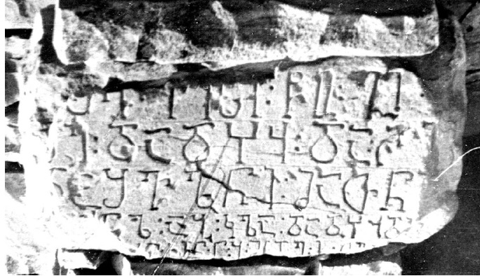

რუღჟაბის წარწერა დაღესტნიდან
შინაარსი / Summary
მოსახსენებელი
ბიბლიოგრაფია Bibliography
კრიტიკული გამოცემა Interpretive Edition
ჯ(უა)რი ქ(რისტ)ესი წ(მიდა)ო გ(იორგ)ი
შ(ეიწყალ)ე დადჴჳ და ჩ(ო)ღ(ა)ჲ
და შვ(ი)ლნი მათნი
ალ აბ კლ(ე)სა(ესიი) დადჴჳ დი -
5მენ ქ(ო)რ(ო)ნ(იკო)ნ(ი) ნბ მს დლ ი თე(ბერვალი)
დიპლომატიური გამოცემა Diplomatic Edition
ႿႰႨ ႵႤႱႨ ႼႭ ႢႨ
ႸႤ ႣႠႣჄჃ ႣႠ ႹႶჂ
ႣႠ ႸႥႪႬႨ ႫႠႧႬႨ
ႠႪ ႠႡ ႩႪႱႠ ႣႠႣჄჃ ႣႨ
5ႫႤႬ ႵႰႬႬ ႬႡ ႫႱ ႣႪ Ⴈ ႧႤ

რუღჟაბის წარწერა დაღესტნიდან
{'ka': 'ჯვარი ქრისტესი, წმიდაო გიორგი, შეიწყალე დადხვი და ჩოღაჲ და მათი შვილები, ამ ეკლესიის მაშენებელნი: დადჴჳ, დიმენი. ქორონიკონი 52, 10 თებერვალი.'}
{'default': 'მთიან ხუნძეთში აღმოჩენილი ეპიგრაფიკული ძეგლებიდან რუღჟაბის წარწერა ერთადერთია, რომელიც შეიძლება \n შედარებით ზუსტად დათარიღდეს. მას ახლავს თარიღიც - 1365 წელი. პალეოგრაფიული ნიშნების მიხედვითაც იგი XIV-XV საუკუნეებისა უნდა იყოს.\n სოფელ რუღჟაბში ეკლესიის აგება და მისი არსებობა XV საუკუნემდე სრულიად შეესაბამება ამ პერიოდის ისტორიულ ვითარებას. \n დ. ატაევმა 1958 წელს თავის სტატიაში წარმოადგინა ტ. გუდავას მიერ შესრულებული შემდეგი თარგმანი:\n „პირველი 3 სტრიქონის თარგმანი: \n ჯვარი ქრისტესი. წმიდაო გიორგი, \n შეიწყალე დადჴჳ და \n შვილნი მათნი. \n IV სტრიქონი: ლ აბ, კ, ა დადჴჳ დი - სტრიქონი არ იკითხება. \n V სტრიქონი: გაირჩევა ასოები: ქ.რ.ნ. - რაც ნიშნავს ქორონიკონს. \n თუ ცალკეულ ბ, ი ასოთა მოხაზულობის მიხედვით ვიმსჯელებთ, წარწერა XIV-XV საუკუნეებს განეკუთვნება“ \n (Атаев Д.М. Христианские древности Аварии. Ученые записки Института истории, языка и литературы. Т. IV. Махачкала, 1958, 176). \n \n დ. ატაევის მიერ წარწერის გამოქვეყნების დროს ტექსტში ზოგი შეცდომა გაპარულა, გარდა ამისა, იგი მთლიანად არ გაშიფრულა. \n ძალზე მნიშვნელოვანია ის, თუ რას მიაქცია ყურადღება მთარგმნელმა - V სტრიქონში ჩანს ასოთშეხამება ქრნ, \n რაც ქორონიკონი სიტყვააო, ანუ წარწერაში არის თარიღზე მითითება (იქვე, 176), მაგრამ შემდგომში ეს საკითხი არ დაზუსტებულა. \n შაჰბან ჰაფიზოვი მიუბრუნდა წარწერის შესწავლას. V სტრიქონზე, რომელიც ნაწილობრივაა შემონახული,\n მანაც ქრნ წაიკითხა, რაც, ჩვეულებრივ, ქართულ ეპიგრაფიკაში ნიშნავს სწორედ სიტყვა ქორონიკონს. ქრნ ასოების მომდევნოდ ზის ორწერტილი, \n ანუ განკვეთის ნიშანი, მერე კი ასოს ნახევარია, რომელიც უეჭველად იკითხება როგორც ნ ასო. ამას კვლავ ორწერტილი მოსდევს და ისევ ნაკლული ასო, რომელშიც \n ასევე იოლად იცნობა ბ, რომელსაც კიდევ ერთი ორწერტილი მოჰყვება. ნ და ბ ასოების შემდეგ მიჯრით მოდის 4 ნაკლული ასო. სიტყვა ქორონიკონ-ის მომდევნო ნბ \n ასოების გამოყოფა ორწერტილებით უეჭველად მიანიშნებს იმაზე, რომ აქ ასოებით ციფრებია გადმოცემული, ანუ მითითებულია წარწერის შედგენის თარიღი: ნ უდრის 50-ს, \n ხოლო ბ - 2-ს, რაც ჯამში 52-ია. წარწერის პალეოგრაფიულ თავისებურებათა (რომელთა საფუძველზეც ტ. გუდავამ იგი XIV-XV საუკუნეებით დაათარიღა) \n და მხარის რეალური ისტორიული ვითარების (ამის შესახებ იხ. ქვემოთ) გათვალისწინებით შ. ჰაფიზოვმა წარწერა XIV ქორონიკონს მიაკუთვნა და იგულისხმა 1365 წელი: \n 1313 + 52 = 1365. \n\n შ. ჰაფიზოვი აღნიშნავს, რომ წარწერაში გვხვდება ჴ და ჳ ასოები, რომლებიც წარწერაში მხოლოდ იმ პირსახელის დაწერილობაში დასტურდება, ტ. გუდავა დადჴჳ ფორმით რომ კითხულობდა. \n ხუნძური ანთროპონიმიის თავისებურებათა გათვალისწინებით, ეს სახელი ალბათ უნდა წავიკითხოთ როგორც დადჴუ. სავარაუდოდ, ესაა ხუნძურში დღესაც \n გავრცელებული დადა „მამიკო“ სიტყვის ვარიანტი. მისგან სხვადასხვა კნინობით-ალერსობით აფიქსთა და ეპითეტთა დართვით მიღებულია მამაკაცთა არაერთი პირსახელი, \n მათ შორის რეგიონალური ვარიანტები: დათხუ, დათჵუჰ, დახთუ, თახთუ და სხვ. \n შ. ჰაფიზოვი ტექსტის მთლიანი შინაარსიდან გამომდინარე II სტრიქონის ბოლო სიტყვად წარწერის ქტიტორის დადხვის მეუღლის სახელს ვვარაუდობთ. \n ამ სახელის ჩანაწერის ნაკლულობა პირველი ორი ასოს დაზიანებისა და მესამე ასოს უდიდესი ნაწილის ჩამოტეხის გამო საგრძნობლად ართულებს მის ამოკითხვას. \n უფრო მოსალოდნელია, აქ ეწეროს ჩ, ღ და ი (ანდა ჲ) ასოები. რაკი სავარაუდოა, რომ ამ ადგილას ქალის ხუნძური სახელი ყოფილიყო, მკვლევარი ბოლო ასოდ ჲ-ს გულისხმობს, \n რომელიც ხუნძურ ენაში სიტყვის ბოლოს დაისმის და ქალთა გრამატიკულ კლასს აღნიშნავს \n (შდრ.: ჴაჵ-აჲ - „თეთრი“, ბერცინ-აჲ - „ლამაზი“, ჵერენ-აჲ - „ალერსიანი“ და სხვ.). წარწერაში მოხსენიებული უნდა იყოს სამხრეთელ ხუნძებში დღემდე გავრცელებული ქალის \n პირსახელი ჩოჵაჲ - „გამხდარი, ტანწვრილი; ტანადი“. ამ ძირისაგან მომდინარე მამაკაცთა და ქალთა სახელები გვხვდება ხუნძურ სოფლებში). ჵ თანხმოვნის ჩანაცვლება ღ-თი \n იმით იხსნება, რომ ქართულ ენას არა აქვს ეს თავისებური ბგერა, ხოლო ხმოვნების გამოტოვება ჩვეულებრივი მოვლენაა ქართულ ეპიგრაფიკაში.\n IV სტრიქონის სიტყვა კლა, მკვლევარის აზრით, ქართული ეკლესია სიტყვის შემოკლებული ფორმა უნდა იყოს. სიტყვის პირველი ე ხმოვნის \n უქონლობა შეიძლება აიხსნას ხუნძურ ენაში უმახვილო ხმოვნის ხშირი რედუქციითა და მოცემული სიტყვის დაწერილობის ხუნძურ გამოთქმასთან დაახლოებით \n (შდრ. ანწუხური დიალექტის კლისა და ხუნძ. სამწიგნ. ქილისა - „ეკლესია“). რუღჟაბის წარწერაში ამ სიტყვის წინ განკერძოებული სიტყვა აბ ჩანს, რაც ხუნძურ ენაზე ნიშნავს - „ეს“. \n აბ სიტყვას უსწრებს რომელიღაც სიტყვა, რომელშიც დარწმუნებით იცნობა მხოლოდ ლ ასო, რომლის წინაც სავარაუდოდ ა ხმოვანია. \n თუ მკვლევრის ვარაუდი სწორია და სიტყვა ალ მარცვლით ბოლოვდება, მაშინ სავარაუდოა, რომ ესაა \n ხუნძური ენის მრავლობითი რიცხვის სუფიქსი. იმის გათვალისწინებით, რომ ეკლესია სიტყვის მერე წერია დადჴჳ და ალბათ კიდევ ერთი პირსახელი, რომელიც იწყება დი \n მარცვლით და ბოლოვდება ნ თანხმოვნით (*დი[მა]ნ?), სავარაუდებელია, რომ ეს ორი პიროვნება ეკლესიის მშენებლობის ქტიტორი იყო, რომელთაც ამ საქმეს \n საკუთარი სახსრები მოახმარეს და წარწერაც დაუკვეთეს. ეს სახელი შეიძლება იყოს შემდეგ ხუნძურ სახელთაგან რომელიმე: დიმე (ვარიანტები: დიმან და დამინ), დიბქან, ანდა დიჵინ - „თხა“. \n ასეთ შემთხვევაში პირველი სიტყვა, რომელიც ბოლოვდება -ალ მარცვლით, ალბათ უკავშირდებოდა დადჴჳ და დიმენ (თუ რომელიმე სხვა მსგავს სახელს) და იგი შეიძლება აღდგეს \n ბარალ „მაშენებელნი, ამგებნი“ (ბოლ მაწზე), ან ხეთარალ „მაშენებელნი, ამგებნი“ ფორმით. თუკი ეს ასეა, მაშინ წარწერის IV სტრიქონი სრულად და V სტრიქონის პირველი \n ნახევარი ამგვარად აღდგებოდა: ბარალ აბ კლისა: დადჴჳ, დიმენ. ქორონიკონ 52 (მაშენებელნი ამ ეკლესიისა: დადხვი, დიმენი. ქორონიკონის 52-ე [წელი]). \n V სტრიქონის მეორე ნახევარი ქვედა კიდის მომტვრევის გამო უფრო ძნელი გასაშიფრია. სავარაუდოდ, ამ ნაწილის ბოლო ასევე უკავშირდება ამ ქვაზე \n წარწერის შესრულების თარიღს, რაკი ბოლო ორი ასო თე, შესაძლოა, ქართული თებერვალი სიტყვის შემორჩენილი ელემენტი იყოს. ამგვარ შემთხვევაში თვის დასახელების \n წინ არსებული შვეული ხაზი მარცხნივ წაზრდილი ელემენტითურთ, რომელიც განცალკევებულად დგას, აღნიშნავს დამოუკიდებელ სიტყვას, ან ციფრს და წარმოადგენს \n ქართულ ი ასოს, რომლის რიცხვითი მნიშვნელობა არის 10. კიდევ უფრო ჭირს წლისა და თვის რიცხვის აღმნიშვნელ რიცხვთა შორის მდგომი სიტყვის ამოცნობა. \n განსაკუთრებით ძნელია ამ სიტყვის პირველი ორი ასოს წაკითხვა მაშინ, როდესაც ბოლო ორი ასო გაცილებით უფრო იოლი ამოსაკითხია: ესენია დ და ლ.'}
<div type="edition" xml:lang="ka" ana="mtavruli" xml:space="preserve">
<ab>
<lb n="1"/><w lemma="ქრისტე"><expan><abbr>ქ</abbr><ex>რისტ</ex><abbr>ე</abbr></expan></w>
<w lemma="განსუენება"><expan><abbr>გა</abbr><ex>ნ</ex><abbr>ო</abbr><ex>ჳ</ex><abbr>ს</abbr><ex>უ</ex><abbr>ენე</abbr></expan></w>
<w lemma="სულ">სოჳ<lb n="2" break="no"/>ლსა</w>
<name nymRef="ვაჩა">ვაჩაჲს<lb n="3" break="no"/>ასა</name>
<name nymRef="გურა"><expan><abbr>გო</abbr><ex>ჳ</ex><abbr>რაჲ<lb n="4" break="no"/>სასა</abbr></expan></name>
<name nymRef="მირა"><expan><abbr>მ</abbr><ex>ი</ex><abbr>რა</abbr><ex>ჲ</ex><abbr>ს</abbr><ex>ა</ex><abbr>ს</abbr><ex>ა</ex></expan></name>
</ab>
</div>